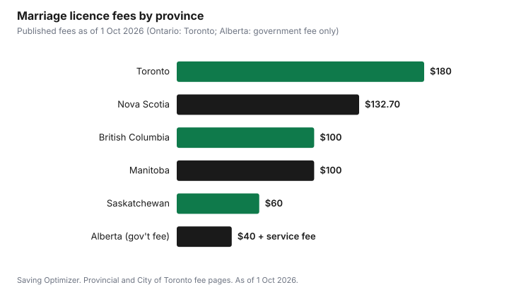

Weddings · Canada
Marriage Licence Fees and Rules by Province in Canada (2026)

A marriage licence in Canada costs between about $40 and $200 depending on the province and, in Ontario, the municipality, as of 1 October 2026. In Toronto it is $180, in British Columbia $100, in Saskatchewan $60, in Manitoba $100 and in Nova Scotia $132.70, while Alberta charges a $40 government fee plus a service fee set by each registry agent. Quebec works differently: there is no licence, but a notice is published before the wedding, and a civil ceremony by a court clerk or at city hall costs $324 plus taxes in 2026. Licences are valid for only about three months, so timing matters as much as the fee.
Key takeaways
- Toronto: $180, not subject to HST, non-refundable. Apply within 90 days of the wedding.
- British Columbia: $100, which includes your first marriage certificate. No waiting period.
- Alberta: $40 government fee plus a registry agent service fee. Valid three months; you can marry the same day.
- Saskatchewan $60 (effective the day after purchase); Manitoba $100 (buy at least 24 hours before); Nova Scotia $132.70.
- Quebec: no licence; civil ceremonies cost $324 plus taxes at a courthouse or city hall, or $431 plus taxes elsewhere, in 2026.
- Every province requires two witnesses and original government ID; divorced applicants need final divorce papers.
Fees by province
| Province | Licence fee | How long it is valid | Waiting period |
|---|---|---|---|
| Ontario | Set by each municipality; Toronto $180 | 90 days | None once issued |
| British Columbia | $100 (includes first certificate) | 3 months | None |
| Alberta | $40 government fee plus registry service fee | 3 months | None; same-day ceremony allowed |
| Saskatchewan | $60 | 90 days | Effective the day after purchase |
| Manitoba | $100 | 3 months | Buy at least 24 hours before |
| Nova Scotia | $132.70 | Check with the province | Check with the province |
| Quebec | No licence; notice published before the wedding | Not applicable | Publication period before the ceremony |
Other provinces and territories set their own fees and rules; their vital statistics offices list them. A licence is only valid in the province that issued it, so couples marrying in a different province from where they live must buy the licence there.
Ontario
In Ontario, licences are issued by municipal offices, and each municipality sets its own fee. Toronto charges $180, not subject to HST and non-refundable, payable by debit or credit card at an in-person appointment at Toronto City Hall or North York Civic Centre. You complete an online application first, print it, and both applicants sign in ink. Only one applicant needs to attend, bringing two pieces of original, unexpired government ID for each person. Health cards and SIN cards are not accepted. Apply within 90 days of the wedding date; the licence is valid anywhere in Ontario. Ontario also allows the publication of banns in a church as an alternative to a licence for religious ceremonies.
If either of you was divorced in Canada, bring the original or court-certified Certificate of Divorce or Decree Absolute. A divorce granted outside Canada needs a Foreign Divorce Authorization from the Office of the Registrar General before a licence can be issued, which involves a legal opinion letter from an Ontario lawyer and takes time, so start early.
British Columbia
In B.C., a licence costs $100, non-refundable, and the fee includes your first marriage certificate, mailed after the marriage is registered. You buy it from a marriage licence issuer within three months before the wedding, and you can marry as soon as you have it. Only one of the couple needs to apply in person, showing primary ID for both, such as a birth certificate, permanent resident card or citizenship card. The ceremony must be performed by a licensed marriage commissioner or religious official, with two witnesses aged 19 or older.
Alberta
Alberta licences come from registry agent offices. The government fee is $40, and each registry agent adds its own service fee, so prices vary between offices; it is worth calling two or three. Both of you usually apply together, swear affidavits, and give your parents' full names and birthplaces. The licence is valid for three months, only for a marriage in Alberta, and you can marry the same day it is issued. Check the document for errors before you leave, because the officiant cannot correct it later.
Saskatchewan and Manitoba
Saskatchewan's licence costs $60, is valid for 90 days and takes effect the day after purchase. Licences are sold by issuers across the province, often jewellery stores, insurance brokers and town offices, and you need two pieces of government ID, one with a photo. Manitoba's licence costs $100, must be bought at least 24 hours before the ceremony, is valid for three months and requires both of you to be present. A Manitoba marriage commissioner charges $50 plus reasonable expenses such as travel. Manitoba does not issue a marriage certificate automatically; you apply for it after the marriage is registered.
Nova Scotia and New Brunswick
Nova Scotia's Vital Statistics fee schedule lists the marriage licence at $132.70 and a short-form marriage certificate at $33. New Brunswick sets its own fee and rules through Service New Brunswick. Atlantic provinces each have their own issuers and timing, so check with the province before booking the ceremony.
Quebec: publication instead of a licence
Quebec does not use marriage licences. Instead, a notice of the marriage is published before the ceremony, and the officiant handles the file. If a court clerk performs a civil marriage at a courthouse, or a mayor or municipal representative performs it at city hall, the 2026 fee is $324 plus taxes. Outside the courthouse or city hall, it is $431 plus taxes. These are maximums for municipalities, which may charge less. A religious officiant sets their own fees, and a designated officiant, such as a friend authorized for one ceremony, can mean no officiant fee. Fees are indexed every 1 January.
After the wedding: the certificate
The marriage licence lets you marry; the marriage certificate proves you did. After the ceremony, the officiant sends the registration to the province. In most provinces you then order a certificate for a fee, which you need to change your name on ID or update records. B.C. includes the first certificate in the licence fee. In Nova Scotia, a short-form certificate is $33. Order it once the registration is processed, and keep it with other important papers.
Example with made-up inputs: the paperwork budget
The officiant fee and certificate cost here are an example with made-up inputs; the licence fee is Toronto's published amount. A couple marrying in Toronto budget for the legal paperwork only.
| Item | Cost |
|---|---|
| Toronto marriage licence | $180 |
| Officiant fee (made-up) | $400 |
| Marriage certificate (made-up) | $25 |
| Total | $605 |

The licence is the smallest legal cost. The officiant is usually the largest, and the City hall and civil options in the city hall wedding guide can lower it.
Checklist
- Confirm where the ceremony will be and buy the licence in that province.
- Count back from the date: no more than about 90 days or three months before, and at least 24 hours before in Manitoba.
- Gather original, unexpired government ID for both of you.
- If divorced, get the final divorce document; for a foreign divorce in Ontario, start the authorization months ahead.
- Book the officiant and confirm two witnesses.
- After the wedding, order the marriage certificate.
| Item | Date or amount |
|---|---|
| Ceremony date | |
| Earliest licence date | |
| Licence fee | |
| Officiant and fee | |
| Witnesses | |
| Certificate ordered |
Common mistakes
- Buying a licence too early, so it expires before the wedding.
- Buying a licence in one province for a wedding in another.
- Bringing photocopies or expired ID.
- Bringing a decree nisi or divorce judgment instead of the final divorce certificate.
- Forgetting to order the marriage certificate afterwards.
Sources
- City of Toronto, Applying for a Marriage Licence (toronto.ca), as of 1 Oct 2026. $180, HST does not apply, non-refundable; 90 days; ID and divorce rules.
- Province of British Columbia, Marriage licences (gov.bc.ca, updated 7 May 2026), as of 1 Oct 2026. $100 including first certificate; 3 months; no waiting period; two witnesses 19 or older.
- Government of Alberta, Get a marriage licence (alberta.ca), as of 1 Oct 2026. $40 government fee plus registry service fee; valid 3 months; same day.
- Government of Saskatchewan, Marriage Licences (saskatchewan.ca), as of 1 Oct 2026. $60; 90 days; effective the day after purchase.
- Manitoba Vital Statistics, Getting Married in Manitoba (vitalstats.gov.mb.ca), as of 1 Oct 2026. $100 licence; 24 hours; 3 months; marriage commissioner $50 plus expenses.
- Nova Scotia, Vital Statistics fees for certificates, licences and services (novascotia.ca), as of 1 Oct 2026. Marriage licence $132.70; short-form certificate $33.
- Gouvernement du Québec, Tariff of Court Costs: Civil marriage and civil union (quebec.ca, updated 1 Jan 2026), as of 1 Oct 2026. $324 and $431 plus taxes.
- The officiant fee and certificate cost in the example are made-up inputs.
Frequently asked questions
How much is a marriage licence in Ontario?
Ontario municipalities set their own fees. In Toronto, a marriage licence costs $180, is not subject to HST and is non-refundable. You apply online, then attend an in-person appointment, and you should apply within 90 days of the wedding.
How much is a marriage licence in B.C.?
A B.C. marriage licence costs $100, non-refundable, and includes your first marriage certificate. You buy it within three months before the wedding, and there is no waiting period.
How much is a marriage licence in Alberta?
Alberta charges a $40 government fee, and registry agents add their own service fee, which varies. The licence is valid for three months, only for a marriage in Alberta, and you can marry the same day.
Do you need a marriage licence in Quebec?
No. Quebec uses publication of a notice before the wedding instead of a licence. A civil marriage by a court clerk at a courthouse, or at city hall, costs $324 plus taxes in 2026, and $431 plus taxes outside those places.
How long is a marriage licence valid in Canada?
Usually about three months. Ontario and Saskatchewan licences are valid for 90 days, and B.C., Alberta and Manitoba licences for three months. Saskatchewan licences take effect the day after purchase, and Manitoba requires purchase at least 24 hours before the ceremony.
Researched and drafted with AI assistance and fact-checked against official Canadian sources. How we create content.